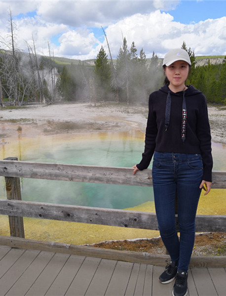
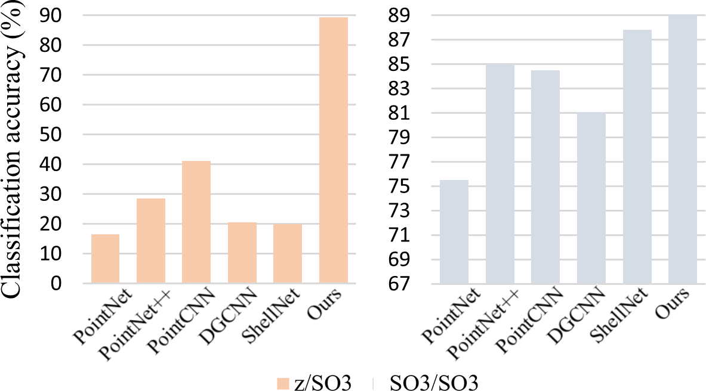
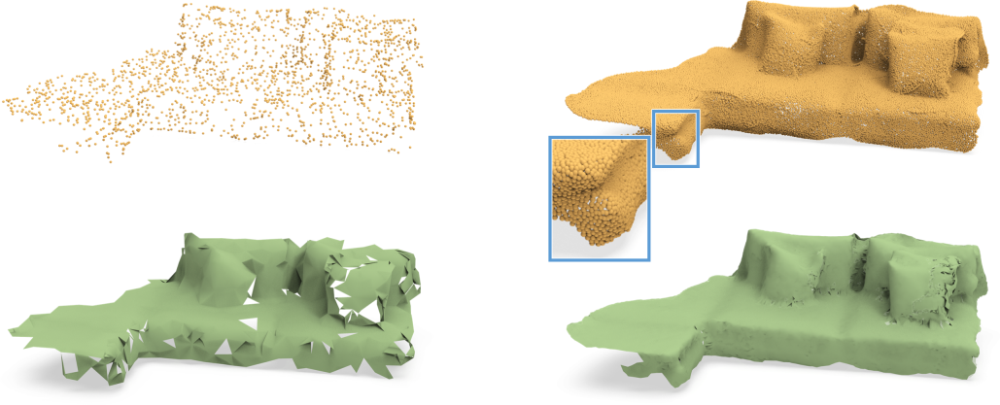
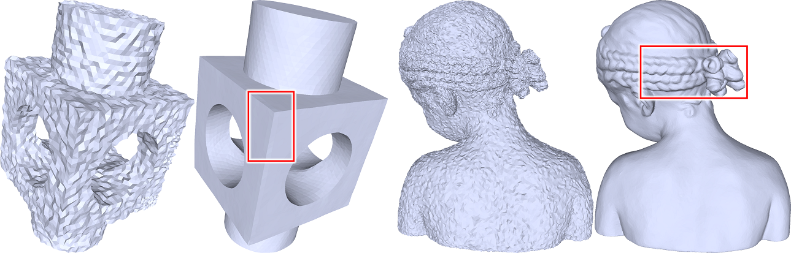
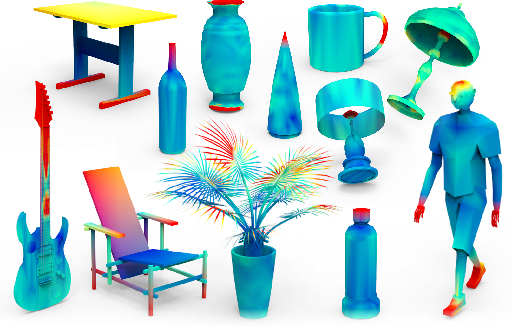
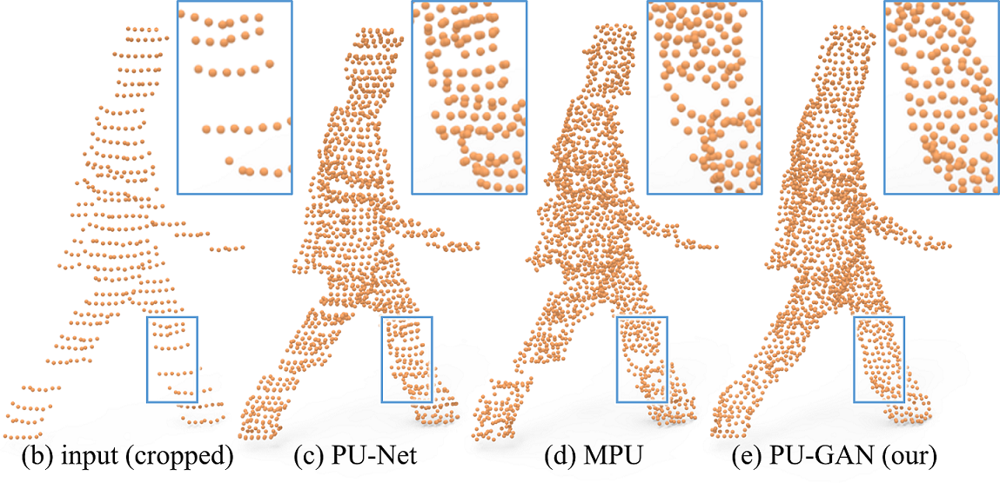
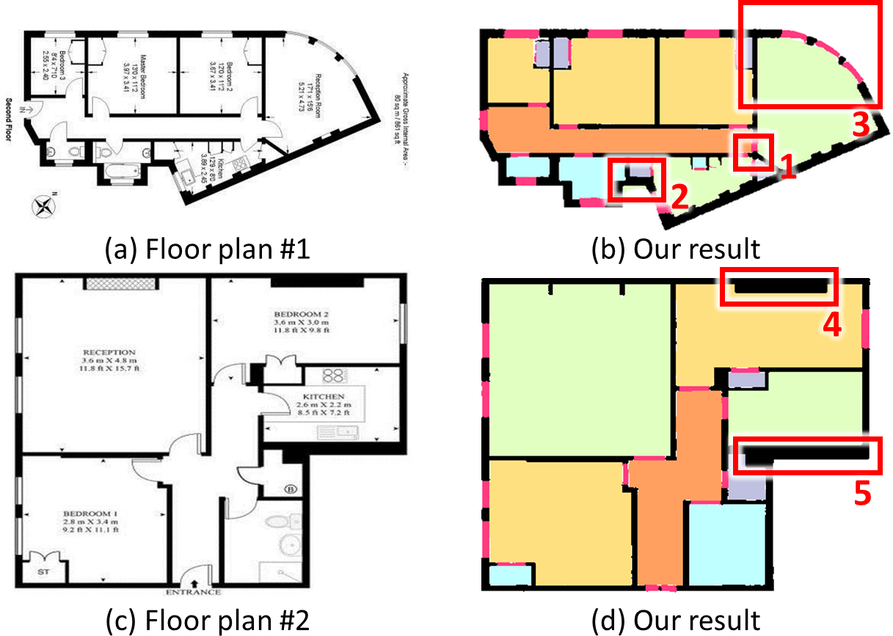
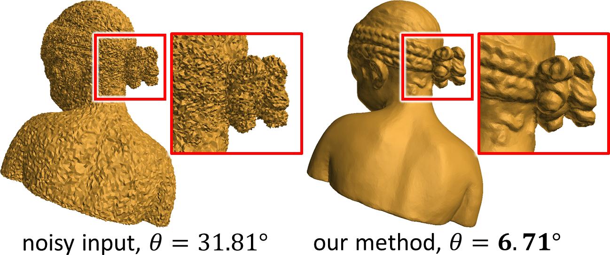
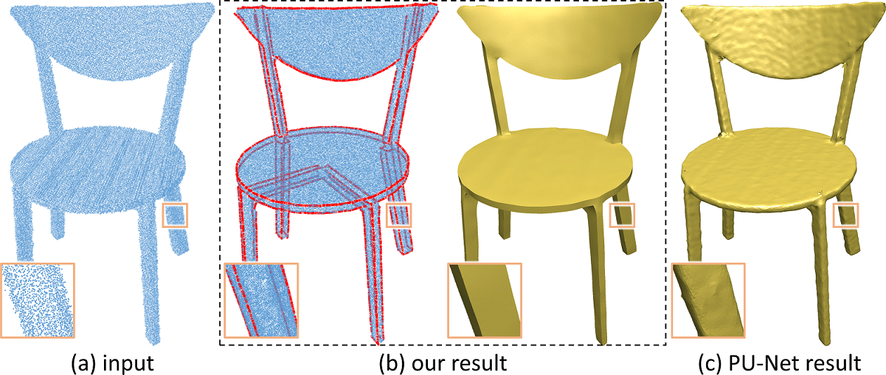
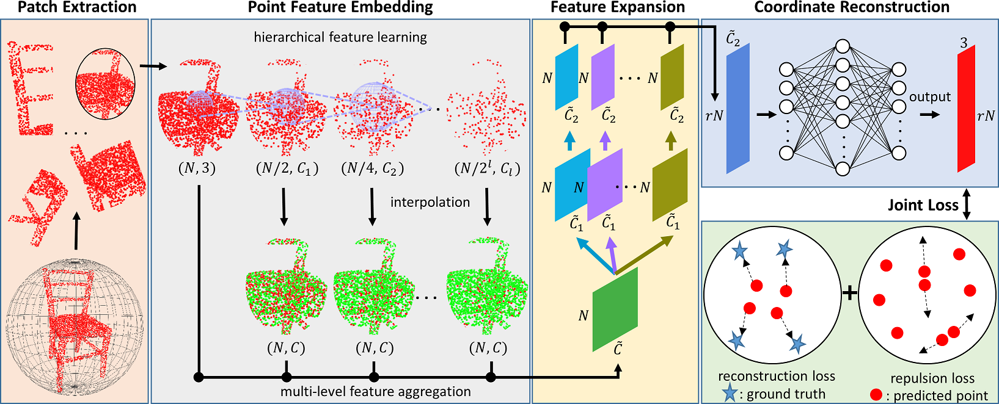

Xianzhi Li
|
 |


Biography [CV]
I have received my Ph.D. degree from the Department of Computer Science and Engineering, The Chinese University of Hong Kong (CUHK), supervised by Prof. Pheng-Ann Heng and Prof. Chi-Wing Fu. Before that, I received the M.Sc. from Biomedical Engineering at CUHK in 2015 and B. Eng. from Biomedical Engineering at Sichuan University in 2014.
My research interests include 3D vision, computer graphics, point cloud processing, and deep learning.
News
- [06/2021] One paper (rotation invariant framework for point cloud analysis) was accepted by TVCG.
- [06/2021] One paper (SP-GAN) was accepted by SIGGRAPH 2021.
- One paper (Disentangle-PU) was accepted by CVPR 2021.
- [23/06/2020] Passed the oral defense and became a Dr.!
- One paper (deep normal filtering for mesh denoising) was accepted by TVCG.
- One paper (unsupervised distinctive region detection) was accepted by TOG.
- One paper (PointAugment) was accepted by CVPR 2020.
- Two papers (PU-GAN and deep floor plan recognition) were accepted by ICCV 2019.
Selected Publications [Google Scholar]
|  | A Rotation-invariant Framework for Deep Point Cloud Analysis. Xianzhi Li, Ruihui Li, Guangyong Chen, Chi-Wing Fu, Daniel Cohen-Or, Pheng-Ann Heng. IEEE Transactions on Visualization and Computer Graphics (TVCG), 2021. [paper][code] |

|
SP-GAN: Sphere-guided 3D Shape Generation and Manipulation. Ruihui Li, Xianzhi Li, Ka-Hei Hui, Chi-Wing Fu. ACM SIGGRAPH, 2021. |
|  | Point Cloud Upsampling via Disentangled Refinement. Ruihui Li, Xianzhi Li*, Pheng-Ann Heng, Chi-Wing Fu. IEEE Conference on Computer Vision and Pattern Recognition (CVPR), 2021. (* Corresponding author) |
|  | DNF-Net: a Deep Normal Filtering Network for Mesh Denoising. Xianzhi Li, Ruihui Li, Lei Zhu, Chi-Wing Fu, Pheng-Ann Heng. IEEE Transactions on Visualization and Computer Graphics (TVCG), 2020. |
|  | Unsupervised Detection of Distinctive Regions on 3D Shapes. Xianzhi Li, Lequan Yu, Chi-Wing Fu, Daniel Cohen-Or, Pheng-Ann Heng. ACM Transactions on Graphics (TOG), 2020. |

|
PointAugment: an Auto-Augmentation Framework for Point Cloud Classification. Ruihui Li, Xianzhi Li, Pheng-Ann Heng, Chi-Wing Fu. IEEE Conference on Computer Vision and Pattern Recognition (CVPR), 2020. (oral) |
|  | PU-GAN: a Point Cloud Upsampling Adversarial Network. Ruihui Li, Xianzhi Li, Chi-Wing Fu, Daniel Cohen-Or, Pheng-Ann Heng. IEEE International Conference on Computer Vision (ICCV), 2019. [project page][code] |
|  | Deep Floor Plan Recognition using a Multi-task Network with Room-boundary-Guided Attention. Zhiliang Zeng, Xianzhi Li, Chi-Wing Fu, Ying-Kin Yu. IEEE International Conference on Computer Vision (ICCV), 2019. |
|  | Non-local Low-rank Normal Filteirng for Mesh Denoising. Xianzhi Li, Lei Zhu, Chi-Wing Fu, Pheng-Ann Heng Computer Graphics Forum (Pacific Graphics), 2018. |
|  | EC-Net: and Edge-aware Point Set Consolidation Network. Lequan Yu*, Xianzhi Li*, Chi-Wing Fu, Daniel Cohen-Or, Pheng-Ann Heng. European Conference on Computer Vision (ECCV), 2018. (* Joint first author) [paper] [project page] |
|  | PU-Net: Point Cloud Upsampling Network. Lequan Yu*, Xianzhi Li*, Chi-Wing Fu, Daniel Cohen-Or, Pheng-Ann Heng. IEEE Conference on Computer Vision and Pattern Recognition (CVPR), 2018. (* Joint first author) |
Honors & Awards
| Teaching Assistant of Merit, 2018 |
| Biomedical Engineering Scholarship, 2015 |
| Outstanding Graduates of Sichuan University, 2014 |
| National Scholarship in China, 2013 |
Teaching
| 2018-2019 | Spring | CSCI 5210 Advanced Topics in Computer Graphics and Visualization |
| 2017-2018 | Fall | CSCI3260 Principles of Computer Graphics |
| 2017-2018 | Spring | CSCI2100 Data Structure |
| 2016-2017 | Fall | CSCI3260 Principles of Computer Graphics |

© Xianzhi Li | Last updated: July 2019